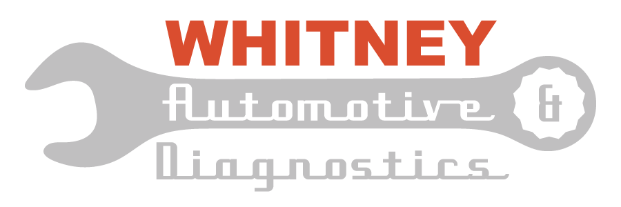
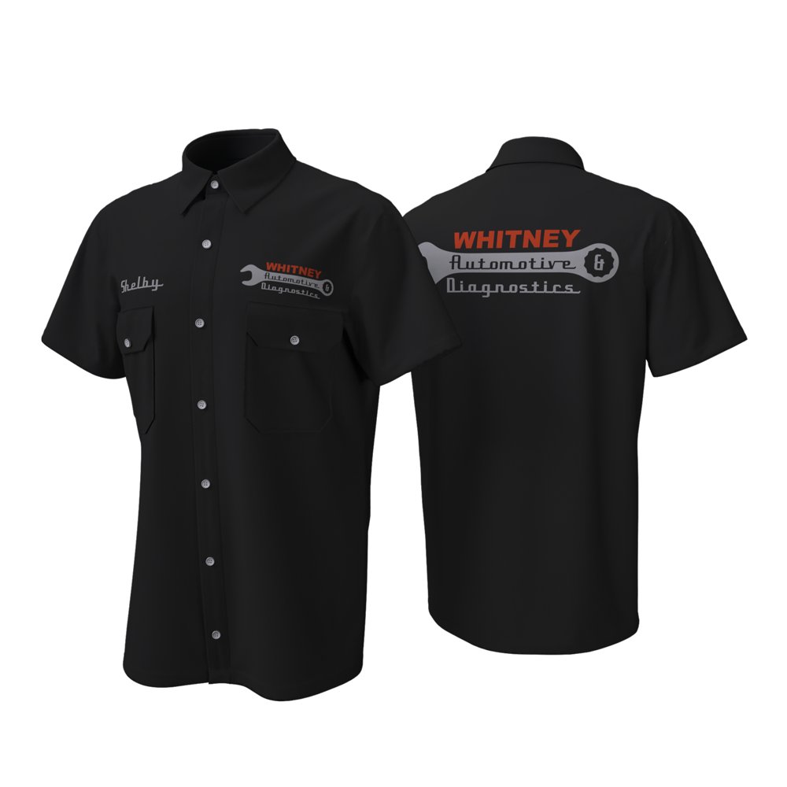
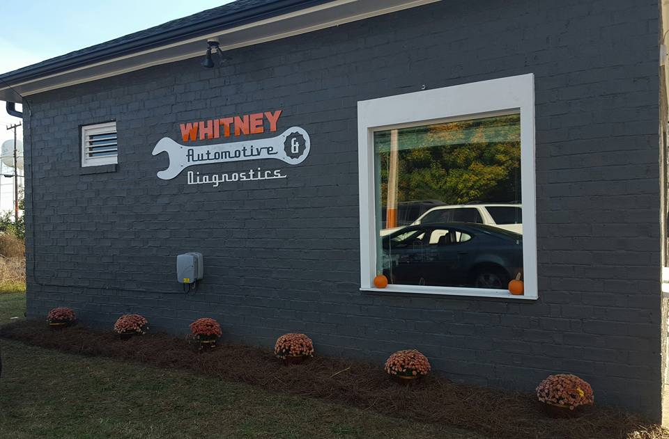
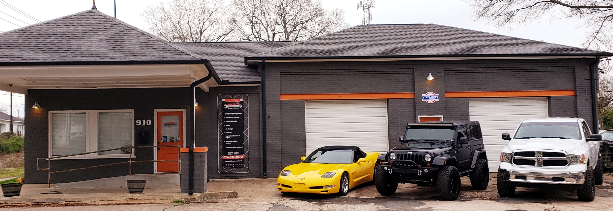

Project information
- Role:
Brand Designer - Overview:
Whitney Automotive & Diagnostics, a local mechanic shop, sought to establish a distinct brand identity to attract a larger customer base. Their vision was to convey expertise, reliability, and friendly service, while differentiating themselves from competitors. The goal was to create a modern and professional brand that resonated with their target audience.
Design Concept
A unique and memorable logo was crafted, capturing the essence of Whitney Automotive & Diagnostics. Incorporating elements symbolizing reliability, and automotive repair, the logo became the visual cornerstone of the brand. The modern color palette, chosen for its ability to evoke trust and professionalism, reinforced the shop's commitment to quality service.

Mechanic Uniform
A professional and branded uniform was meticulously designed for the shop's staff. The logo and brand colors were incorporated, creating a cohesive and polished look. Practicality and comfort were balanced to ensure the mechanics' ease of movement while maintaining a strong brand presence.


Signage
To enhance the visibility of Whitney Automotive & Diagnostics' physical location, we created eye-catching signage. The prominently displayed logo effectively communicates the dedication to top-quality automotive repairs and diagnostics. The signage serves as a powerful visual representation of the brand and reinforces the shop's professionalism and credibility.
Stationery
Consistency was key in maintaining the brand image across various touchpoints. We developed stationery items, including business cards, invoices, notebook covers, and erasers, featuring the new logo. These elements were designed to reflect the brand's professionalism, attention to detail, and commitment to providing exceptional automotive services.

Outcome
Through our comprehensive branding efforts, Whitney Automotive & Diagnostics has successfully established a strong and distinguished brand presence within the competitive automotive industry. The logo design and stationery items work cohesively to project the shop's commitment to excellence and exceptional customer service. By capturing attention with the impactful signage, Whitney Automotive & Diagnostics effectively communicates its expertise and establishes trust among potential customers.
